Bienvenido a mi guía
Esta guía está diseñada para que explores los conceptos clave de SQL y veas ejemplos útiles para cada tema.
1. Intro BD Relacional
Una base de datos relacional es un sistema que almacena información en tablas compuestas por filas y columnas.
Una base de datos relacional organiza datos en tablas que se relacionan mediante claves. Cada fila es un registro y cada columna un campo.
ConceptoOrganiza la información en diferentes tablas conectadas entre sí. Cada tabla contiene registros (filas) y campos (columnas), lo que facilita el almacenamiento, búsqueda y gestión de datos.
HistoriaEn 1970, Edgar F. Codd, investigador de IBM, propuso el modelo relacional para organizar datos mediante tablas relacionadas. Este modelo revolucionó la forma de almacenar información y se convirtió en el estándar utilizado por empresas e instituciones de todo el mundo.
¿Qué es un SGBD?Un Sistema Gestor de Bases de Datos (SGBD) es un software que permite crear, administrar, consultar y proteger bases de datos.
Funciones principales- Almacenar información.
- Consultar datos rápidamente.
- Modificar registros.
- Controlar el acceso de los usuarios.
- Mantener la seguridad de los datos.
MySQL, Oracle Database, SQL Server, PostgreSQL.
ImportanciaLas bases de datos relacionales son fundamentales en escuelas, hospitales, bancos y aplicaciones web, ya que permiten gestionar grandes cantidades de información de forma segura, organizada y eficiente.
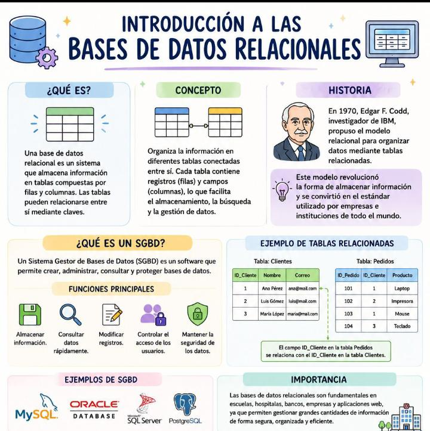
-- Ejemplo de tablas relacionadas CREATE TABLE Clientes ( ID_Cliente INT PRIMARY KEY, Nombre VARCHAR(100), Correo VARCHAR(150) ); CREATE TABLE Pedidos ( ID_Pedido INT PRIMARY KEY, ID_Cliente INT, Producto VARCHAR(100), FOREIGN KEY (ID_Cliente) REFERENCES Clientes(ID_Cliente) );
- Un sistema bancario usa tablas para clientes, cuentas y transacciones relacionadas.
- Una tienda online guarda productos y pedidos en tablas vinculadas.
- Un hospital almacena pacientes, citas y médicos en tablas distintas con claves.
- Una librería registra autores, libros y ventas sin duplicar información.
- Una aplicación escolar consulta notas de alumnos junto a sus cursos.
2. Diseño de Base de Datos
Buenas prácticas: identificar entidades, atributos y relaciones; normalizar hasta 3NF cuando proceda.
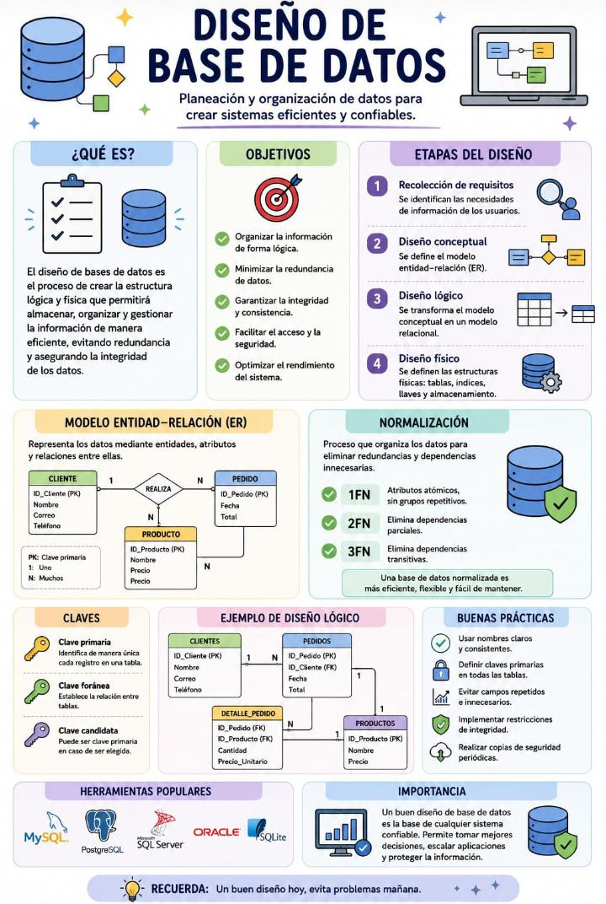
-- Ejemplo: entidades Clientes y Pedidos CREATE TABLE clientes (id INT PRIMARY KEY, nombre VARCHAR(100)); CREATE TABLE pedidos (id INT PRIMARY KEY, cliente_id INT, total DECIMAL(10,2), FOREIGN KEY (cliente_id) REFERENCES clientes(id)); -- Ejemplo adicional: vista de pedidos por cliente SELECT c.nombre, p.id, p.total FROM clientes c JOIN pedidos p ON c.id = p.cliente_id;
- Entidades: cliente, pedido, producto.
- Atributos: nombre, dirección, precio, fecha.
- Relaciones: un cliente puede tener muchos pedidos.
- Una tabla de detalle de pedido conecta pedidos y productos.
- Una vista puede mostrar clientes con totales de ventas.
3. Crear BD y tablas / Restricciones
Crear bases de datos y tablas, y añadir constraints: PRIMARY KEY, UNIQUE, NOT NULL, CHECK.
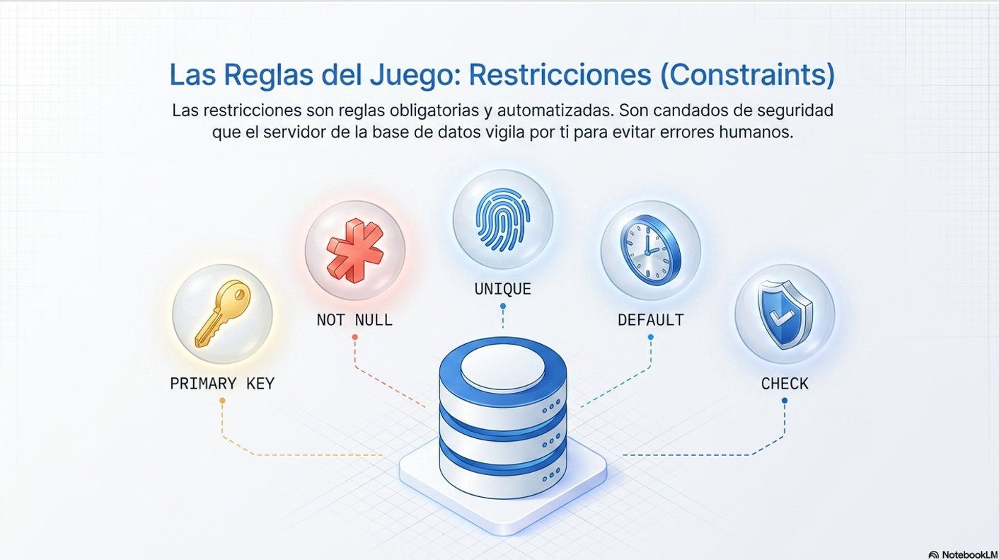
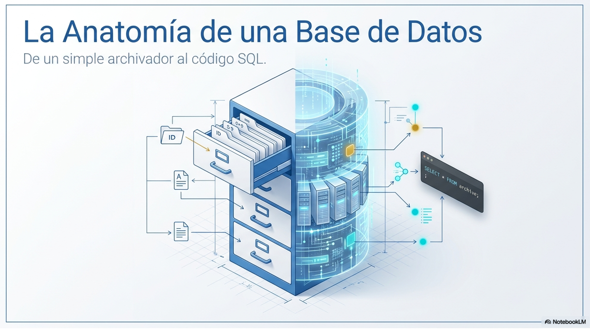
CREATE DATABASE tienda; USE tienda; CREATE TABLE producto ( id INT PRIMARY KEY, sku VARCHAR(50) UNIQUE, nombre VARCHAR(200) NOT NULL, precio DECIMAL(8,2) CHECK (precio >= 0) ); -- Ejemplo adicional: restricción NOT NULL y bloqueo de precio negativo CREATE TABLE proveedores ( id INT PRIMARY KEY, nombre VARCHAR(120) NOT NULL, telefono VARCHAR(20) UNIQUE, monto_credito DECIMAL(10,2) CHECK (monto_credito >= 0) );
- PRIMARY KEY identifica de forma única cada fila.
- UNIQUE evita duplicar códigos de producto o correos.
- NOT NULL garantiza que un campo siempre tenga valor.
- CHECK valida condiciones como precios mayores o iguales a cero.
- Declarar constraints ayuda a mantener datos coherentes.
4. Modificar y eliminar Tablas
ALTER TABLE para cambiar estructura; DROP TABLE para eliminar.
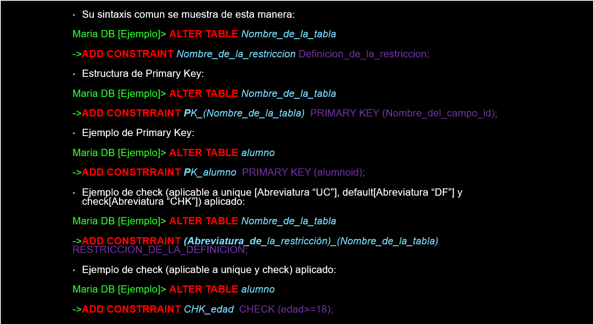
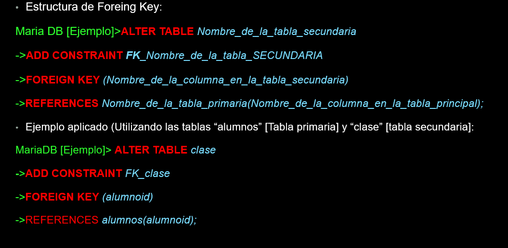
-- Añadir columna ALTER TABLE usuarios ADD COLUMN fecha_registro DATE; -- Renombrar columna ALTER TABLE clientes RENAME COLUMN nombre TO nombre_completo; -- Eliminar tabla DROP TABLE temporal;
- ALTER TABLE usuarios ADD COLUMN telefono VARCHAR(20);
- ALTER TABLE clientes RENAME COLUMN nombre TO nombre_completo;
- ALTER TABLE productos DROP COLUMN descripcion;
- ALTER TABLE pedidos MODIFY COLUMN total DECIMAL(12,2);
- DROP TABLE temporal; elimina la tabla completa y sus datos.
5. Foreign Key / Normalización
Las claves foráneas mantienen relaciones y la normalización evita redundancias.
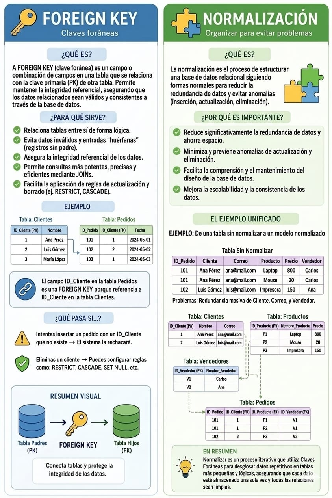
CREATE TABLE ordenes ( id INT PRIMARY KEY, cliente_id INT, fecha DATE, total DECIMAL(10,2), FOREIGN KEY (cliente_id) REFERENCES clientes(id) ); -- Ejemplo adicional: clave foránea con eliminación en cascada CREATE TABLE orden_detalle ( id INT PRIMARY KEY, orden_id INT, producto_id INT, cantidad INT, FOREIGN KEY (orden_id) REFERENCES ordenes(id) ON DELETE CASCADE );
- Una tabla detalle usa foreign keys para vincular productos y pedidos.
- Normalizar evita guardar el mismo cliente varias veces.
- Una relación 1:N enlaza clientes con múltiples órdenes.
- Separar direcciones en otra tabla reduce redundancias.
- Actualizar un precio en una sola tabla evita inconsistencias.
6. Insertar Registros
INSERT INTO agrega nuevos registros a una tabla. Si la columna `id` es AUTO_INCREMENT, el valor se genera automáticamente.

-- Crear base de datos y tabla
CREATE DATABASE ejemplo_db;
USE ejemplo_db;
CREATE TABLE alumnos (
id_alumno VARCHAR(10),
nombre VARCHAR(50),
apellido VARCHAR(50),
edad INT,
carrera VARCHAR(50)
);
-- Insertar registros
INSERT INTO alumnos VALUES ('003','Juan','Perez',18,'Programacion');
INSERT INTO alumnos VALUES ('004','Ana','Martinez',18,'Diseno Grafico');
INSERT INTO alumnos VALUES ('005','Luis','Ramirez',20,'Programacion');
INSERT INTO alumnos VALUES ('006','Sofia','Torres',19,'Contabilidad');
-- Ver registros
SELECT * FROM alumnos;
- INSERT INTO alumnos VALUES ('007','Luis','Gomez',21,'Redes');
- INSERT INTO alumnos (id_alumno,nombre,apellido) VALUES ('008','Sofia','Lopez');
- INSERT INTO alumnos (id_alumno,nombre,apellido,edad) VALUES ('009','Marta','Diaz',20);
- INSERT INTO alumnos (id_alumno,nombre,apellido,carrera) VALUES ('010','Diego','Vargas','Diseño');
- INSERT INTO alumnos VALUES ('011','Carla','Ruiz',22,'Contabilidad');
- VARCHAR(10): almacena texto de hasta 10 caracteres.
- VARCHAR(50): almacena texto de hasta 50 caracteres.
- INT: almacena números enteros.
7. Eliminar Registros
DELETE es la sentencia que se usa para borrar uno o más registros de una tabla según una condición.
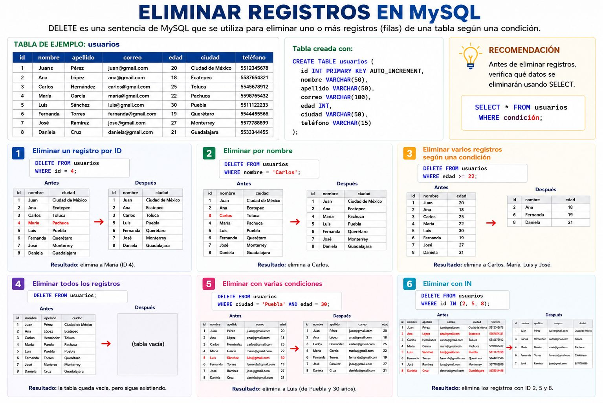
-- Eliminar un registro por ID DELETE FROM usuarios WHERE id = 4; -- Eliminar por nombre DELETE FROM usuarios WHERE nombre = 'Carlos'; -- Eliminar varios registros según una condición DELETE FROM usuarios WHERE edad >= 22; -- Eliminar con varias condiciones DELETE FROM usuarios WHERE ciudad = 'Puebla' AND edad = 30; -- Eliminar con IN DELETE FROM usuarios WHERE id IN (2, 5, 8);
- DELETE FROM: elimina registros.
- WHERE: evita borrar todos los registros por accidente.
- SELECT antes de DELETE: verifica qué datos se eliminarán.
- DELETE FROM usuarios; borra todos los registros, pero la tabla sigue existiendo.
- DELETE FROM usuarios WHERE id = 4;
- DELETE FROM usuarios WHERE nombre = 'Carlos';
- DELETE FROM usuarios WHERE edad >= 22;
- DELETE FROM usuarios WHERE ciudad = 'Puebla' AND edad = 30;
- DELETE FROM usuarios WHERE id IN (2, 5, 8);
8. Actualizar Registros
UPDATE modifica valores de registros existentes; SET especifica las columnas y nuevos valores, y WHERE limita el alcance.

-- Actualizar un registro UPDATE usuarios SET edad = 26 WHERE id = 1; -- Actualizar varios campos UPDATE usuarios SET email = 'ana_nuevo@mail.com', edad = 27 WHERE id = 1; -- Actualizar registros según condición UPDATE usuarios SET ciudad = 'Monterrey' WHERE id > 1; -- Ejemplo de formato de datos UPDATE usuarios SET nombre = 'Juan', fecha_registro = '2023-10-27' WHERE id = 5;
| Tipo de Dato | Usa comillas simples? | Ejemplo |
|---|---|---|
| VARCHAR / TEXT | Sí | SET nombre = 'Mario' |
| DATE / DATETIME | Sí | SET fecha = '2023-10-27' |
| INT / DECIMAL | No | SET id = 5 |
- UPDATE [tabla]: indica la tabla a modificar.
- SET: define las columnas y sus nuevos valores.
- WHERE: evita cambios masivos no deseados.
- Sin WHERE, se actualizan todos los registros de la tabla.
- UPDATE usuarios SET edad = 26 WHERE id = 1;
- UPDATE usuarios SET email = 'ana_nuevo@mail.com', edad = 27 WHERE id = 1;
- UPDATE usuarios SET ciudad = 'Monterrey' WHERE id > 1;
- UPDATE usuarios SET nombre = 'Juan' WHERE id = 5;
- UPDATE usuarios SET fecha_registro = '2023-10-27' WHERE id = 5;
9. Seleccionar Registros
El comando SELECT se utiliza para consultar y mostrar información almacenada en una tabla.
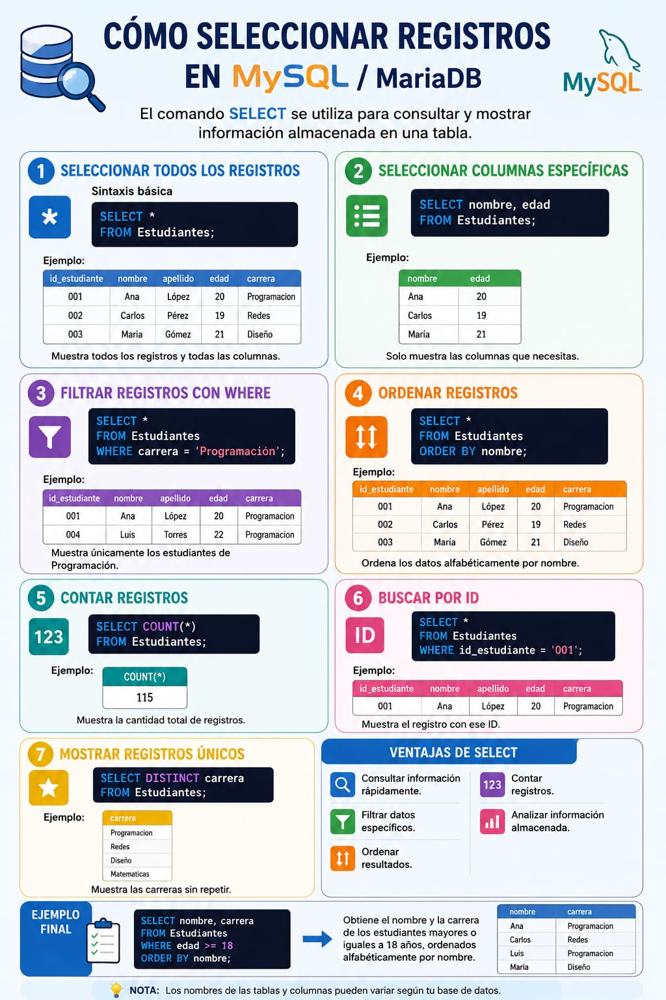
-- 1. Seleccionar todos los registros SELECT * FROM Estudiantes; -- 2. Seleccionar columnas específicas SELECT nombre, edad FROM Estudiantes; -- 3. Filtrar registros con WHERE SELECT * FROM Estudiantes WHERE carrera = 'Programación'; -- 4. Ordenar registros SELECT * FROM Estudiantes ORDER BY nombre; -- 5. Contar registros SELECT COUNT(*) FROM Estudiantes; -- 6. Buscar por ID SELECT * FROM Estudiantes WHERE id_estudiante = '001'; -- 7. Mostrar registros únicos SELECT DISTINCT carrera FROM Estudiantes;
- Consultar información rápidamente.
- Filtrar datos específicos con WHERE.
- Ordenar resultados con ORDER BY.
- Contar registros con COUNT.
- Analizar información almacenada.
SELECT nombre, carrera FROM Estudiantes WHERE edad >= 18 ORDER BY nombre;
Obtiene el nombre y la carrera de los estudiantes mayores o iguales a 18 años, ordenados alfabéticamente por nombre.
Nota: los nombres de tablas y columnas pueden variar según la base de datos.
- SELECT * FROM Estudiantes;
- SELECT nombre, edad FROM Estudiantes;
- SELECT * FROM Estudiantes WHERE carrera = 'Programación';
- SELECT DISTINCT carrera FROM Estudiantes;
- SELECT COUNT(*) FROM Estudiantes WHERE edad >= 18;
10. Operadores lógicos y de comparación
Uso de AND, OR, NOT, LIKE, IS NULL, BETWEEN, IN para filtrar resultados.
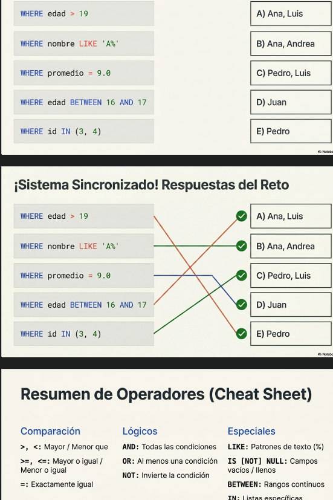
SELECT * FROM productos WHERE precio BETWEEN 10 AND 50 AND nombre LIKE '%Pro%'; SELECT * FROM usuarios WHERE id IN (1,2,3) AND email IS NOT NULL; -- Uso de NOT e IS NULL SELECT * FROM clientes WHERE estado <> 'inactivo' AND email IS NOT NULL;
- SELECT * FROM productos WHERE precio BETWEEN 10 AND 50;
- SELECT * FROM usuarios WHERE id IN (1,2,3);
- SELECT * FROM clientes WHERE email IS NOT NULL;
- SELECT * FROM clientes WHERE estado <> 'inactivo';
- SELECT * FROM productos WHERE nombre LIKE '%Pro%';
11. Order By / Limit / Top
Ordenar resultados y limitar filas devueltas.
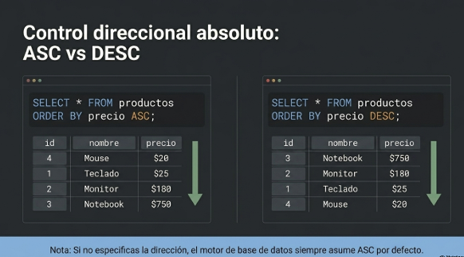
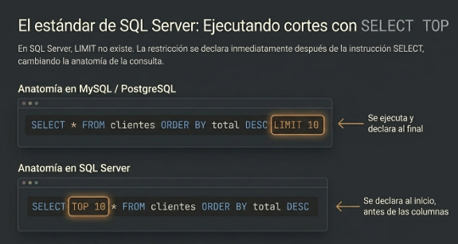
SELECT * FROM productos ORDER BY precio DESC LIMIT 10; -- MySQL/Postgres -- SQL Server: SELECT TOP 10 * FROM productos ORDER BY precio DESC; -- Paginación simple SELECT * FROM productos ORDER BY nombre ASC LIMIT 10 OFFSET 20;
- SELECT * FROM productos ORDER BY precio DESC LIMIT 10;
- SELECT TOP 5 * FROM ventas ORDER BY fecha DESC;
- SELECT * FROM empleados ORDER BY apellido ASC LIMIT 20;
- SELECT * FROM clientes ORDER BY nombre ASC LIMIT 15 OFFSET 5;
- SELECT * FROM pedidos ORDER BY total DESC LIMIT 3;
12. Funciones de texto
Funciones como CONCAT, SUBSTRING, UPPER, LOWER, TRIM, LENGTH.
SELECT CONCAT(nombre,' ',apellido) AS nombre_completo FROM usuarios; SELECT UPPER(email) FROM usuarios; -- Más ejemplos de texto SELECT TRIM(nombre) AS limpio, LENGTH(email) AS largo_email FROM usuarios; SELECT SUBSTRING(nombre,1,10) AS prefijo FROM usuarios;
Descarga el resumen de funciones de texto:
Abrir PDF de Funciones de texto- SELECT CONCAT(nombre,' ',apellido) AS nombre_completo FROM usuarios;
- SELECT UPPER(email) FROM usuarios;
- SELECT LOWER(nombre) FROM empleados;
- SELECT TRIM(nombre) AS limpio FROM clientes;
- SELECT SUBSTRING(nombre,1,10) AS prefijo FROM usuarios;
13. Funciones numéricas
SUM, AVG, COUNT, MIN, MAX, ROUND, FLOOR, CEIL.
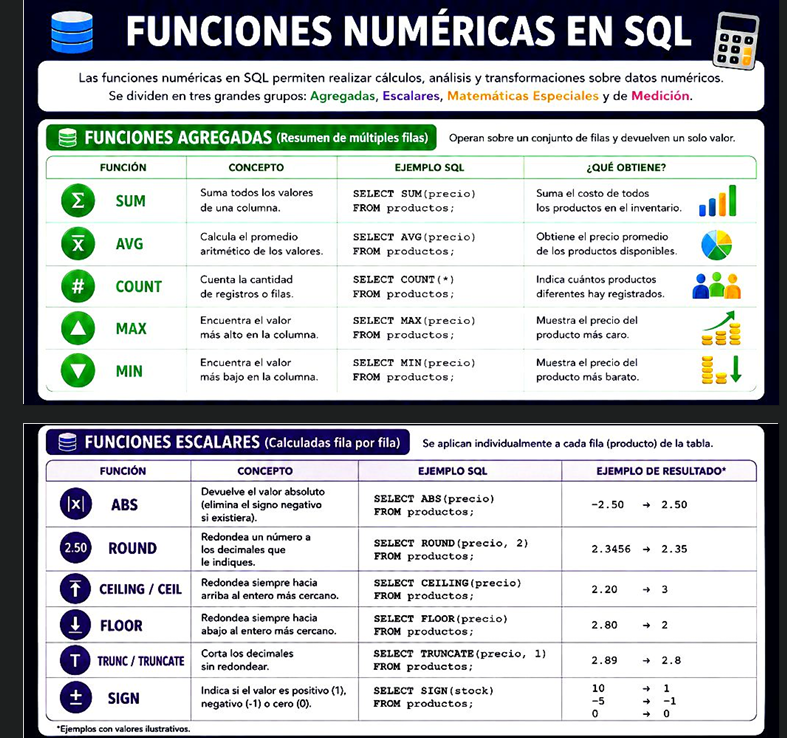
SELECT AVG(total) AS promedio FROM ordenes; SELECT COUNT(*) FROM usuarios WHERE fecha_registro > '2024-01-01'; -- Ejemplo adicional: sumas, mínimos y máximos SELECT SUM(total) AS total_ventas, MIN(total) AS venta_minima, MAX(total) AS venta_maxima FROM ordenes; SELECT ROUND(AVG(total), 2) AS promedio_redondeado FROM ordenes;
| Función | Concepto | Ejemplo SQL | Qué obtiene |
|---|---|---|---|
| SUM | Suma todos los valores de una columna. | SELECT SUM(precio) FROM productos; |
Suma el costo de todos los productos en inventario. |
| AVG | Calcula el promedio aritmético de los valores. | SELECT AVG(precio) FROM productos; |
Obtiene el precio promedio de los productos. |
| COUNT | Cuenta la cantidad de registros o filas. | SELECT COUNT(*) FROM productos; |
Indica cuántos productos hay registrados. |
| MAX | Encuentra el valor más alto en la columna. | SELECT MAX(precio) FROM productos; |
Muestra el precio del producto más caro. |
| MIN | Encuentra el valor más bajo en la columna. | SELECT MIN(precio) FROM productos; |
Muestra el precio del producto más barato. |
- SELECT SUM(total) AS total_ventas FROM ordenes;
- SELECT AVG(total) AS promedio FROM ordenes;
- SELECT COUNT(*) FROM usuarios WHERE fecha_registro > '2024-01-01';
- SELECT MAX(precio) FROM productos;
- SELECT MIN(precio) FROM productos;
14. Manejo de Fechas y horas
Funciones: NOW(), DATE_ADD/DATE_SUB, DATE_TRUNC, EXTRACT.
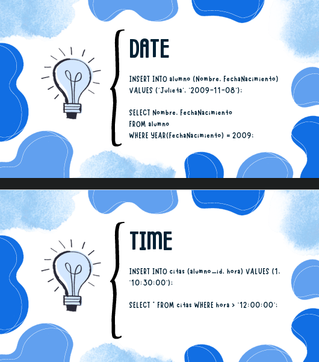
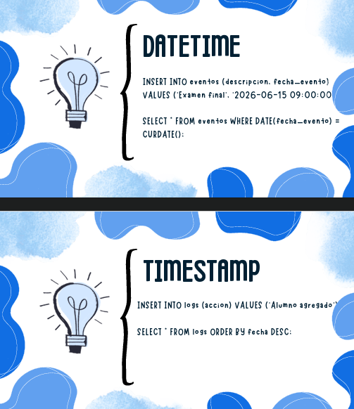
-- Últimos 7 días
SELECT * FROM ordenes WHERE fecha > NOW() - INTERVAL '7 days';
-- Extraer año
SELECT EXTRACT(YEAR FROM fecha) AS anio FROM ordenes;
-- Ejemplo adicional: añadir un mes y agrupar por día
SELECT DATE_ADD(fecha, INTERVAL 1 MONTH) AS fecha_mas_un_mes FROM ordenes;
SELECT DATE_TRUNC('day', fecha) AS dia, SUM(total) FROM ordenes GROUP BY dia ORDER BY dia;
- SELECT * FROM ordenes WHERE fecha > NOW() - INTERVAL '7 days';
- SELECT EXTRACT(YEAR FROM fecha) AS anio FROM ordenes;
- SELECT DATE_ADD(fecha, INTERVAL 1 MONTH) FROM ordenes;
- SELECT DATE_TRUNC('day', fecha) AS dia FROM ordenes;
- SELECT DATE(fecha) AS dia FROM ordenes WHERE fecha > '2024-01-01';